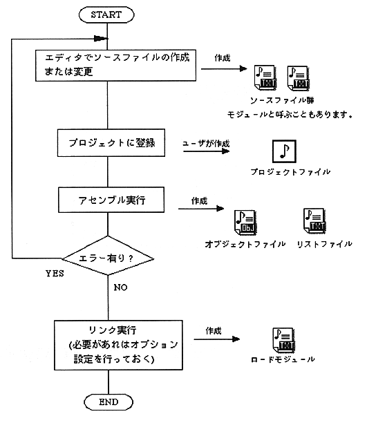

Source file (module) A file that describes the program data, and for each function
Collectives are called modulesObject (module) A file created by assembling the source.
Load module link execution from source registered in project created by combining the created object files .
This file can be executed by a debugger or target. is .